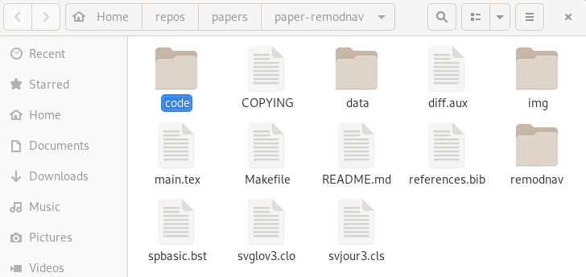
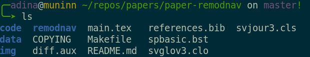
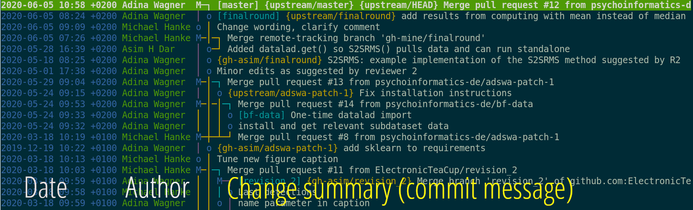

Research data management with DataLad
@ IMPRS-MMFD (extra)

Stephan Heunis jsheunis
jsheunis
 @jsheunis@mas.to
@jsheunis@mas.to
|
Michał Szczepanik
mslw
@doktorpanik@masto.ai
|
|
|
Psychoinformatics lab,
Institute of Neuroscience and Medicine (INM-7) Research Center Jülich |
Slides: https://github.com/datalad-handbook/course/
Summary of features
Core concepts & features
Everything happens in DataLad datasets

Dataset = Git/git-annex repository
- content agnostic
- no custom data structures
- complete decentralization
- Looks and feels like a directory on your computer:
  File viewer and terminal view of a DataLad dataset
version control arbitrarily large files

- Non-complex DataLad core API (easy for data management novices)
- Pure Git or git-annex commands (for regular Git or git-annex users, or to use specific functionality)
Stay flexible:
Use a datasets' history
- reset your dataset (or subset of it) to a previous state,
- revert changes or bring them back,
- find out what was done when, how, why, and by whom
- Identify precise versions: Use data in the most recent version, or the one from 2018, or...
Consume and collaborate

machine-readable, re-executable provenance

Seamless nesting and dataset linkage

Third party integrations

Apart from local computing infrastructure (from private laptops to computational clusters), datasets can be hosted in major third party repository hosting and cloud storage services. More info: Chapter on Third party infrastructure.